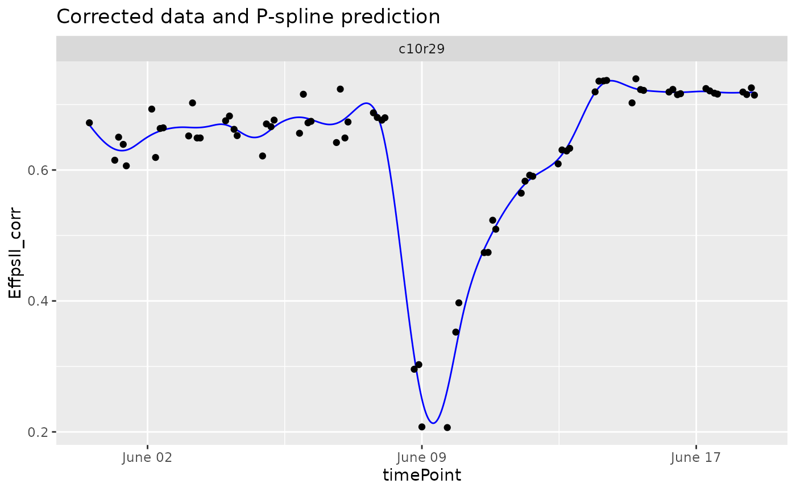
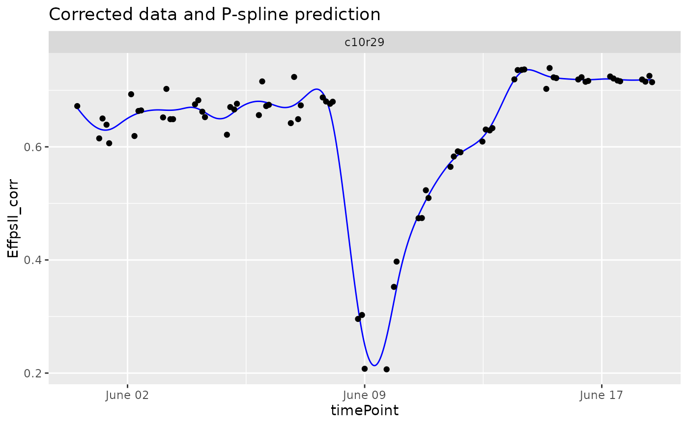

Fit P-Splines on corrected or raw data. The number of
knots is chosen by the user. The function outputs are predicted P-Spline
values and their first and second derivatives on a dense grid. The
outputs can then be used for outlier detection for time series
(see detectSerieOut) and to estimate relevant parameters from
the curve for further analysis (see estimateSplineParameters).
Usage
fitSpline(
inDat,
trait,
genotypes = NULL,
plotIds = NULL,
knots = 50,
useTimeNumber = FALSE,
timeNumber = NULL,
minNoTP = NULL
)Arguments
- inDat
A data.frame with corrected spatial data.
- trait
A character string indicating the trait for which the spline should be fitted.
- genotypes
A character vector indicating the genotypes for which splines should be fitted. If
NULL, splines will be fitted for all genotypes.- plotIds
A character vector indicating the plotIds for which splines should be fitted. If
NULL, splines will be fitted for all plotIds.- knots
The number of knots to use when fitting the spline.
Should the timeNumber be used instead of the timePoint?
If
useTimeNumber = TRUE, a character vector indicating the column containing the numerical time to use.- minNoTP
The minimum number of time points for which data should be available for a plant. Defaults to 80% of all time points present in the TP object. No splines are fitted for plants with less than the minimum number of timepoints.
Value
An object of class HTPSpline, a list with two
data.frames, predDat with predicted values and coefDat
with P-Spline coefficients on a dense grid.
See also
Other functions for fitting splines:
plot.HTPSpline()
Examples
## The data from the Phenovator platform have been corrected for spatial
## trends and outliers for single observations have been removed.
## Fit P-Splines on a subset of genotypes
subGeno <- c("G070", "G160")
fit.spline <- fitSpline(inDat = spatCorrectedVator,
trait = "EffpsII_corr",
genotypes = subGeno,
knots = 50)
## Extract the data.frames with predicted values and P-Spline coefficients.
predDat <- fit.spline$predDat
head(predDat)
#> timeNumber timePoint pred.value deriv deriv2 plotId
#> 1 0 2018-05-31 16:37:00 0.6687993 -8.426473e-07 1.839622e-12 c10r29
#> 2 800 2018-05-31 16:50:20 0.6681258 -8.410810e-07 2.076020e-12 c10r29
#> 3 1600 2018-05-31 17:03:40 0.6674536 -8.393257e-07 2.312418e-12 c10r29
#> 4 2400 2018-05-31 17:17:00 0.6667829 -8.373812e-07 2.548816e-12 c10r29
#> 5 3200 2018-05-31 17:30:20 0.6661139 -8.352476e-07 2.785214e-12 c10r29
#> 6 4000 2018-05-31 17:43:40 0.6654466 -8.329248e-07 3.021612e-12 c10r29
#> genotype
#> 1 G160
#> 2 G160
#> 3 G160
#> 4 G160
#> 5 G160
#> 6 G160
coefDat <- fit.spline$coefDat
head(coefDat)
#> obj.coefficients plotId type genotype
#> 1 0.6965965 c10r29 timeNumber1 G160
#> 2 0.6685027 c10r29 timeNumber2 G160
#> 3 0.6421887 c10r29 timeNumber3 G160
#> 4 0.6265465 c10r29 timeNumber4 G160
#> 5 0.6263577 c10r29 timeNumber5 G160
#> 6 0.6420706 c10r29 timeNumber6 G160
## Visualize the P-Spline predictions for one genotype.
plot(fit.spline, genotypes = "G160")
 ## Visualize the P-Spline predictions and first derivatives for one plant.
plot(fit.spline, plotIds = "c10r29", plotType = "predictions")

plot(fit.spline, plotIds = "c10r29", plotType = "derivatives")
## Visualize the P-Spline predictions and first derivatives for one plant.
plot(fit.spline, plotIds = "c10r29", plotType = "predictions")

plot(fit.spline, plotIds = "c10r29", plotType = "derivatives")